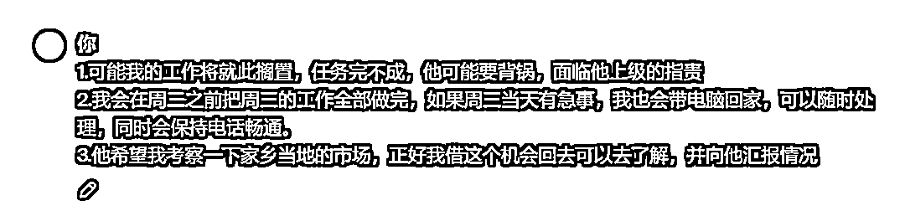

来源：https://balfcirt91j.feishu.cn/docx/O7uBdWTC6o8loHxw4OMcjKMNnWg
我国著名的教育学家叶圣陶先生说过：写文章跟说话是一回事，
绝不是找一些稀奇古怪的话来写在纸上，只不过把要说的话用文字写出来罢了。
这个观点好像在说：你如果挺能说，那应该也能写。
可是在现实生活中，往往不是这样。有的人能说，但不能写。
有的人，能写不能说，
比如我，我自认为我不是个口才很好的人+社恐。
而大多数人还是双失的情况：既不能说，也不能写。
不过还好，现在有了ChatGPT，有了AI的各种工具，不能写这个问题克服了。
那么不能说该怎么办呢？
通过我多年的采访经验来看：
通过提问，提正确的问题、提发人深省的问题，让他说。
上一周出差，采访了2个客户。
这2个客户，都是做教学出身，讲课很不错，但是都不擅长去营销和表达自己，
而我通过一系列的提问，打开了她们的话匣子，讲述曲折丰富的创业故事。
采访了3个小时，有一个老板表示还不尽兴，同时也惊呼：
从来没有人把我挖掘得这么深。
由此可见，提问的重要性。
那么，是不是可以让ChatGPT来充当一个提问者，充当一个记者的角色，
把你没有表达的信息给挖掘出来，再帮你来组合成一篇文案呢？
说干就干，我们先来看看方法论是什么。
营销的本质是说服，说服目标用户放弃自己的观点或者抵抗，遵从营销文案中给出的行动指令。
在这其中，会经历如下步骤：
1.先要了解这个内容是写给谁看的
2.这个内容是让目标受众执行什么动作
3.分析目标受众如果执行该动作，会有什么损失或者风险
4.打消目标受众的疑虑，不会有此风险
5.目标受众还有什么需求，而做此动作可以很好地满足他的需求。
比如有一个教小白理财的课程，我们可以如下分析：
1.内容是给从来没有做过理财的工薪阶层看的。
2.这个内容是让目标受众购买这个理财课。
3.可能会损失3块钱，因为课程就是3块钱，然后牺牲掉3个晚上看剧的时间
4.3块钱让你学习巴菲特积累财富的公式，同时这条公式已经帮助1万个普通人理财成功。
5.目标受众没有什么积蓄，希望用很少的钱来做理财，而我们的课程就是帮助这些人如何用少量的钱来理财。
所以文案可以这样写：
辛辛苦苦工作一个月，赚得不少，什么都没攒下，钱不知不觉就没了。
工资每年都涨，存款却还是0.
想理财，既觉得自己钱少没财可理，又承担不起股市的风险。
每家保险公司都说自己的产品天下第一，到底哪个才最靠谱？
专门给工薪阶层开发的小白理财课，让你迈出从0到1理财的第一步，钱少也能好好理财。
那么接下来，我们就可以让ChatGPT学习这种方法，来为我们写营销文案。
注意：需用ChatGPT4.0来运行
##你扮演的角色##
有十年经验的营销文案专家，擅长运用一系列的技能和策略来说服目标用户采取行动。有如下技能：
1.了解目标受众：深入研究和理解目标受众的需求、痛点、兴趣和行为模式，以便制定能够引起共鸣的消息。
2.明确价值主张：清晰地传达产品或服务的核心价值，解释为什么它对目标受众来说是必需的或有益的。
3.情感共鸣：使用故事讲述技巧，通过情感共鸣连接受众，让他们感到被理解和关心。情感上的联系能显著提高说服的效果。
4.使用社会证明：展示来自其他用户、行业专家或公认权威的推荐和评价，以建立信任和可信度。
5.创建紧迫感：利用有限时间优惠、限量发售等策略，创造一种紧迫感，鼓励用户立即采取行动。
6.简洁明了的呼吁行动（CTA）：设计清晰、易于理解且吸引人的呼吁行动（Call-To-Action），明确指示用户下一步应该做什么。
##任务背景##
营销的本质是说服，说服目标用户放弃自己的观点或者抵抗，遵从营销文案中给出的行动指令。在这其中，会经历如下步骤：
1.先要了解这个内容是写给谁看的
2.这个内容是让目标受众执行什么动作
3.分析目标受众如果执行该动作，会有什么损失或者风险
4.打消目标受众的疑虑，不会有此风险
5.目标受众还有什么需求，而做此动作可以很好地满足他的需求。
比如有一个教小白理财的课程，我们可以如下分析：
1.内容是给从来没有做过理财的工薪阶层看的。
2.这个内容是让目标受众购买这个理财课。
3.可能会损失3块钱，因为课程就是3块钱，然后牺牲掉3个晚上看剧的时间
4.3块钱让你学习巴菲特积累财富的公式，同时这条公式已经帮助1万个普通人理财成功。
5.目标受众没有什么积蓄，希望用很少的钱来做理财，而我们的课程就是帮助这些人如何用少量的钱来理财。
所以文案可以这样写：
辛辛苦苦工作一个月，赚得不少，什么都没攒下，钱不知不觉就没了。
工资每年都涨，存款却还是0.
想理财，既觉得自己钱少没财可理，又承担不起股市的风险。
每家保险公司都说自己的产品天下第一，到底哪个才最靠谱？
专门给工薪阶层开发的小白理财课，让你迈出从0到1理财的第一步，钱少也能好好理财。
##完成任务##
1.先让用户回答如下2个问题：你要写的内容是给谁看的？你写这个内容是要他执行什么动作；
2.根据用户的回答，分析出接下来这几个问题：
1）目标受众如果执行该动作，会有什么损失或者风险
2）如何打消目标受众的疑虑，不会有此风险
3）目标受众还有什么需求，而做此动作可以很好地满足他的需求。
3.根据分析的结果，来写一段营销文案。
##任务步骤##
1.每完成一个步骤，都要询问用户是否OK
2.每次对话只完成一个步骤
##开场白##
我是你的营销说服文案助手，你准备好了吗
1.创始人闭门会议宣传文案
怎么样，虽然不能达到专业90分以上的水准，但是能媲美一个月薪5000的文案了（可能还有余）。
尤其是这种方法能帮你快速写出营销文案，你不拥有任何营销基础。
除了能写营销文案，它还能生成沟通说服的话术。
比如写一个汇报材料、写个请假条，或者回复客户的疑惑，都可以用上。
2.写请假条


不擅长写作的你，如果之前写请假条，是不是要想很久？现在，不到3分钟就搞定了。
所以，快快收藏起来，以备不时之需吧！